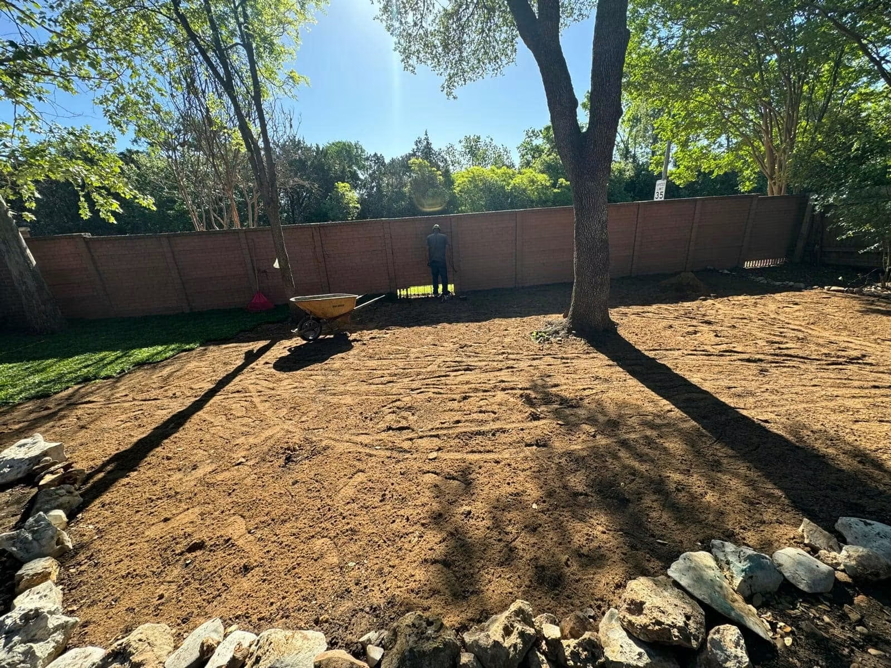
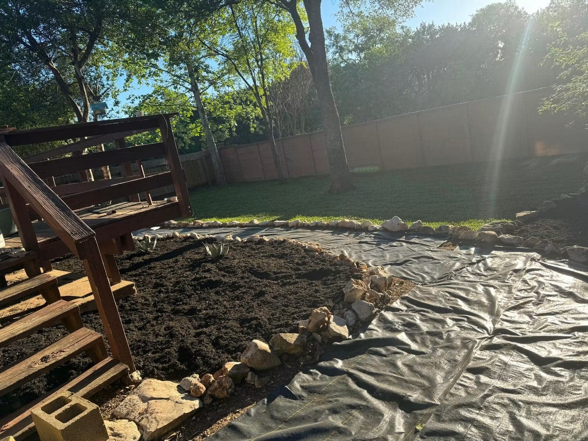
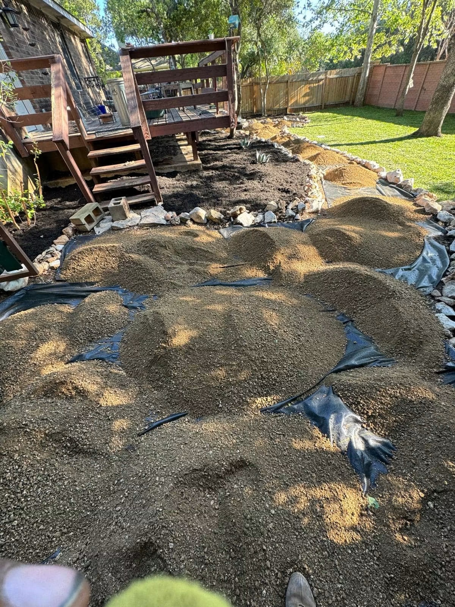
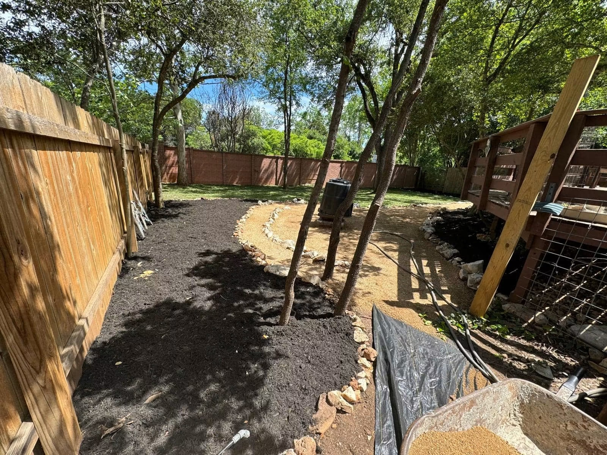
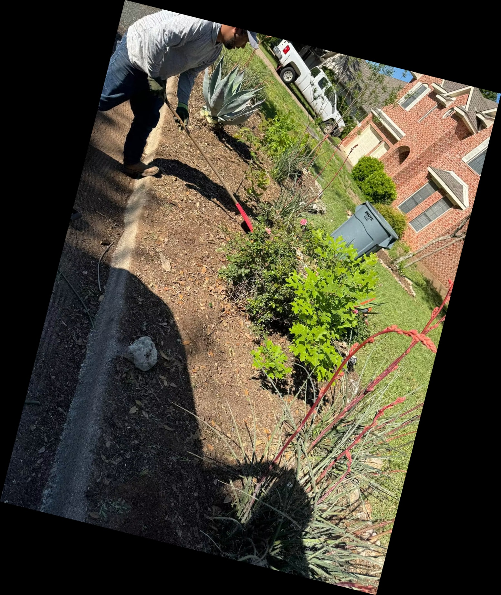

Side-yard access path
Overgrowth to compacted path
Service provided: vegetation removal, clearing, grading, a compacted gravel walkway, stone edging, and fresh mulch.
Project gallery
Filter real projects by service to see the condition we started with, the work performed, and the finished result.
Before + after
Each before-and-after story connects the starting condition to the work completed and the practical result.
Side-yard access path
Service provided: vegetation removal, clearing, grading, a compacted gravel walkway, stone edging, and fresh mulch.


Garden cleanup + mulch
Service provided: weed and overgrowth removal, selective pruning, bed shaping, clean edging, and fresh mulch.


Complete landscape installation
Service provided: grading, lawn, pathways, stone borders, planting zones, mulch, and final cleanup.
More completed work


Documented across different jobs
From clearing and grading to final bed details, these real project photos show how the work comes together.






Have a project in mind?